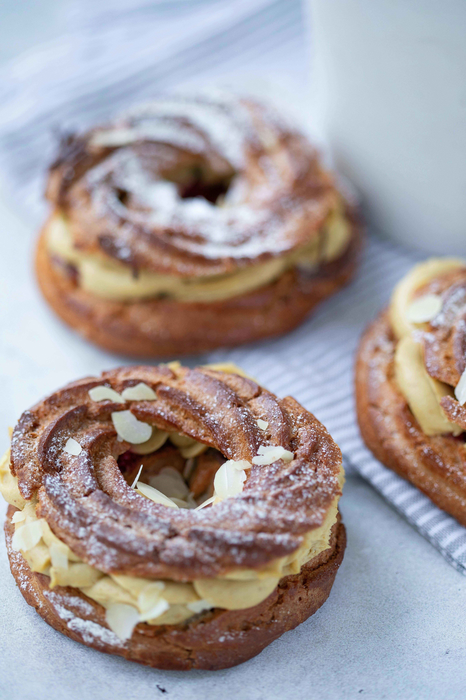
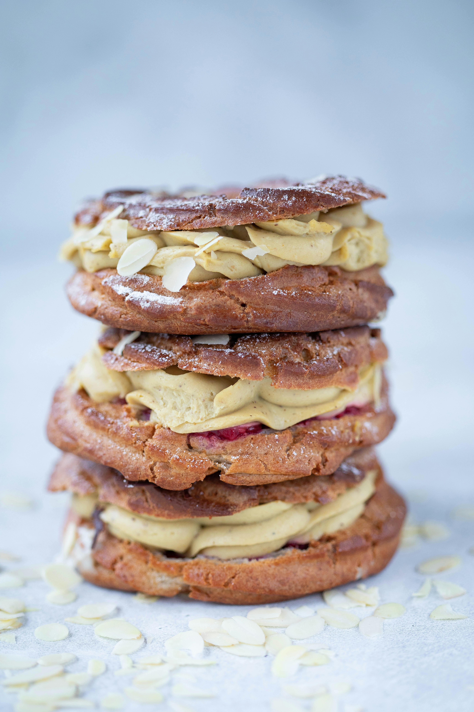
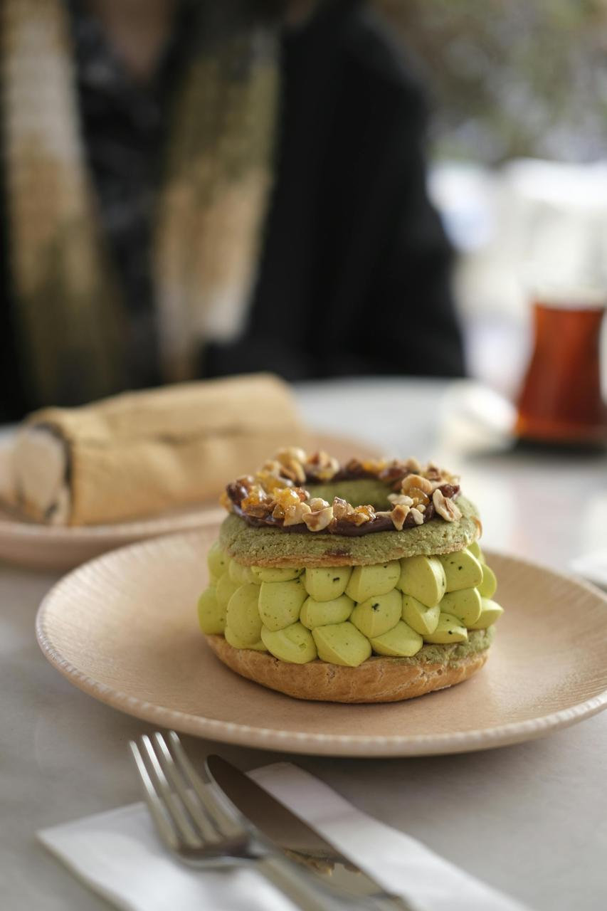
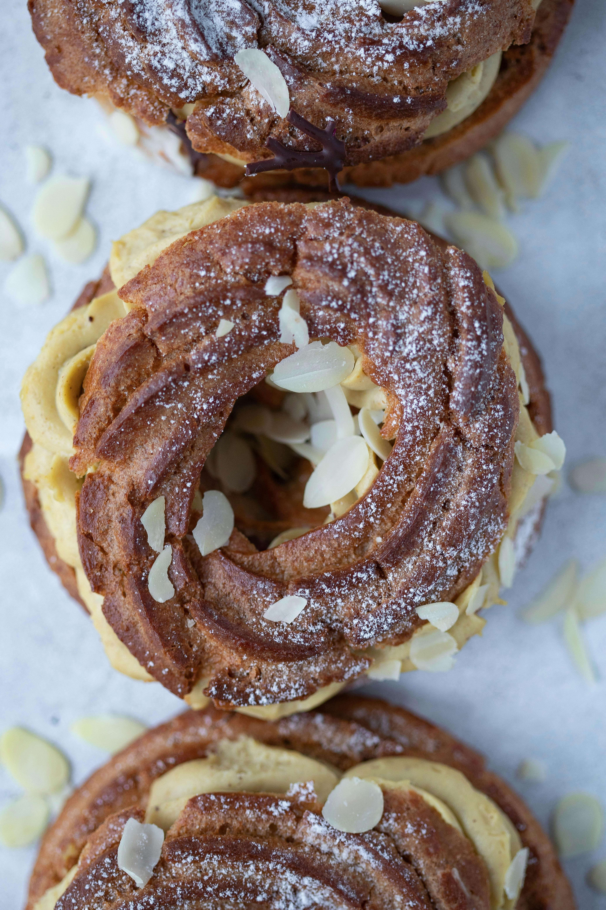

Overview
The Paris-Brest is one of the most iconic pastries in French pâtisserie. It is recognised for its circular shape, golden choux pastry and rich praline cream filling.
Made using light choux pastry, the dessert is usually filled with smooth hazelnut or praline cream and topped with sliced almonds and icing sugar.
Today, the Paris-Brest remains a favourite dessert in French bakeries and luxury pâtisseries around the world, admired for both its elegant appearance and delicious flavour.

The History of Paris-Brest

The Paris-Brest was created in France in 1910 by pastry chef Louis Durand. The dessert was inspired by the famous cycling race Paris-Brest-Paris, a long-distance competition connecting the cities of Paris and Brest.
Pierre Giffard, the organiser of the cycling race, asked Durand to create a pastry that would represent the event. Durand then designed a circular dessert shaped like a bicycle wheel.
The pastry quickly became popular throughout France because of its unique appearance, airy texture and rich praline flavour. More than a century later, it remains one of the most famous French desserts.
What Makes Paris-Brest Special
The Paris-Brest is admired for its perfect balance between light pastry and rich filling. The choux pastry is delicate and airy, while the praline cream is smooth, nutty and creamy.
Sliced almonds and icing sugar add extra texture and elegance to the dessert. Its circular shape also makes it one of the most recognisable pastries in French pâtisserie.
A well-made Paris-Brest should feel light, creamy and perfectly balanced without being too heavy. The combination of textures and flavours creates a luxurious pastry experience.

Different Types of Paris-Brest

Although the traditional Paris-Brest is made with praline cream, pastry chefs today create many modern variations.
Some versions include chocolate, pistachio, coffee, caramel or fruit-flavoured fillings. Luxury pâtisseries also decorate Paris-Brest pastries with artistic designs and elegant toppings.
Mini Paris-Brest pastries have also become popular, especially in cafés and dessert boutiques.
Classic Paris-Brest
The traditional version filled with rich praline cream, topped with sliced almonds and icing sugar.
Chocolate Paris-Brest
A modern variation filled with smooth chocolate cream for a richer flavour.
Pistachio Paris-Brest
A luxurious version made with pistachio cream and delicate nut toppings.
Mini Paris-Brest
Small elegant versions often served in cafés, pastry shops and luxury dessert boutiques.
Fun Fact
The Paris-Brest was inspired by a cycling race, which is why the pastry has its famous circular shape resembling a bicycle wheel.
Even today, the Paris-Brest remains one of the most iconic symbols of French pastry craftsmanship. Pastry chefs around the world continue to reinvent it with modern flavours, artistic decorations and creative presentations, while still preserving the traditional essence of the dessert.
Its unique history and recognisable shape make the Paris-Brest more than just a pastry — it is also a symbol of French culinary creativity, tradition and refinement.

Quick Facts
- Inspired by the Paris-Brest-Paris cycling race
- Created in France in 1910
- Known for its circular bicycle wheel shape
- Traditionally filled with praline cream
Best Enjoyed With
- Coffee
- Hot chocolate
- Cappuccino
- French café desserts